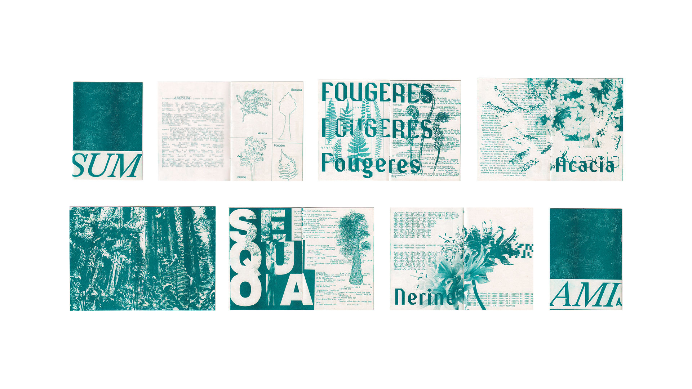
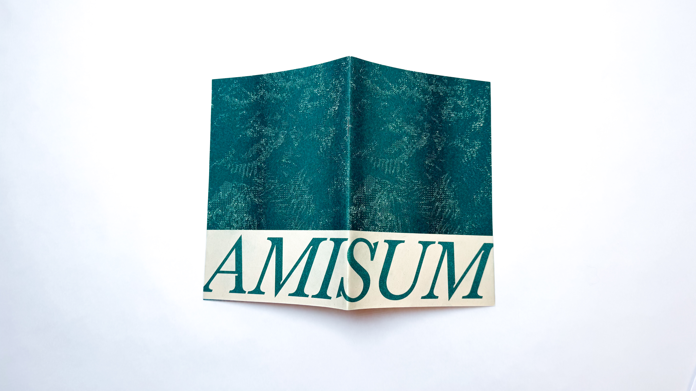
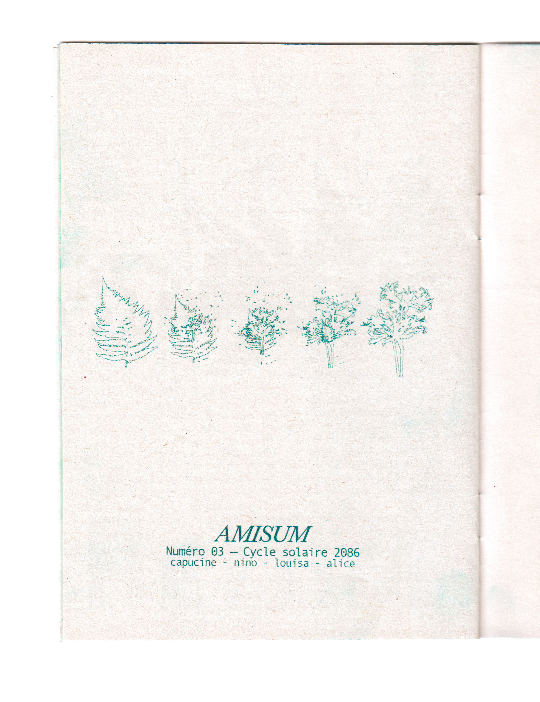
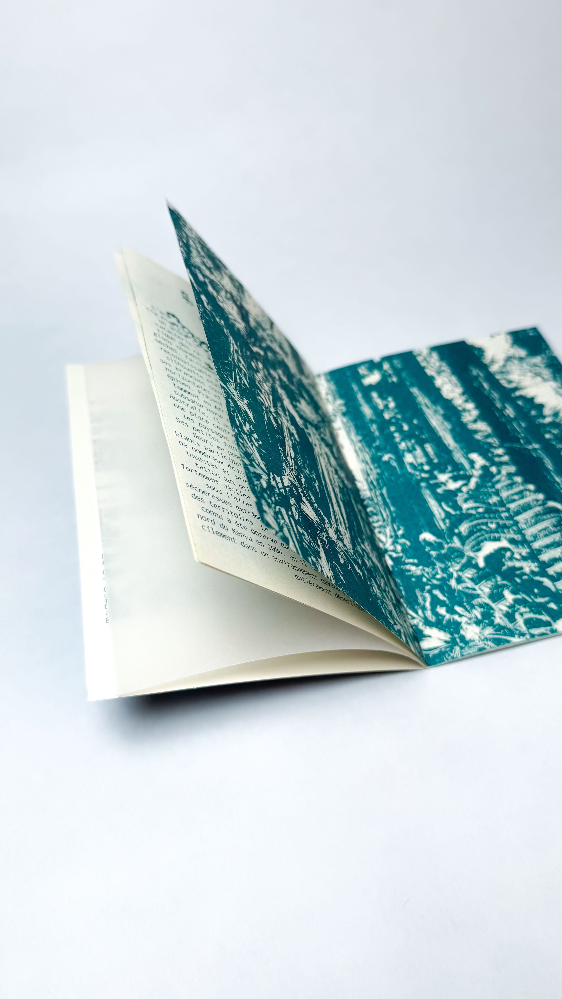
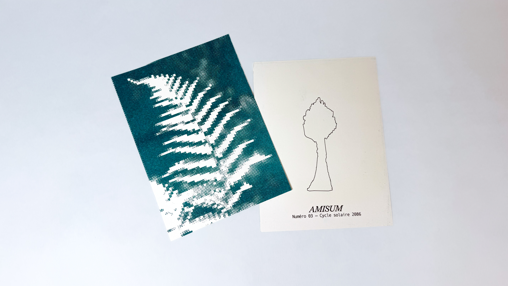

Réalisation d'un fanzine « du futur » format A5 en risographie lors d’un workshop avec Hadrien Herzog.
Amisum — « ce qu’on n’a plus », en latin — est une édition qui s’attache à observer les
disparitions dans le temps, qu’elles soient matérielles, culturelles ou vivantes. Ce troisième
numéro, daté de
2086, est consacré à la botanique et présente quatre espèces disparues.
Travail de groupe avec Alice, Capucine et Louisa.





